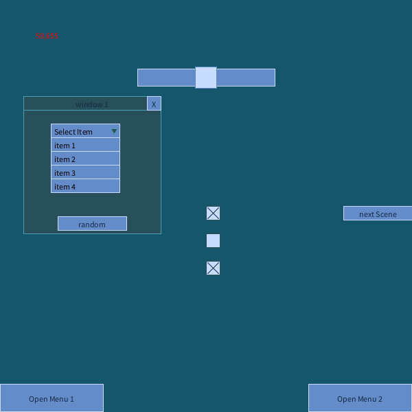
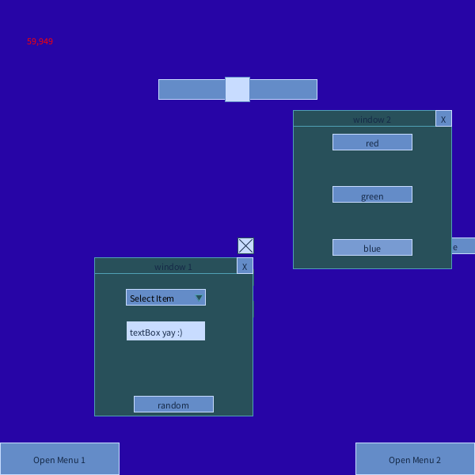

UI Framework for Processing 4
A small UI framework made in Processing
which supports multiple scenes, each of which can have their own UI.
Features include buttons, sliders, checkboxes, dropdowns, draggable windows and more...
example project
example project
Related Projects
(tool) Finding Remote Locations on Grid-Based maps
(tool) Fractals on Demand - Mastodon Bot
(tool) Gravitational Basins of Attraction
(tool) N-TET Fretboard Scale Visualizer
(tool) OECA
(tool) Automatic Website Creation